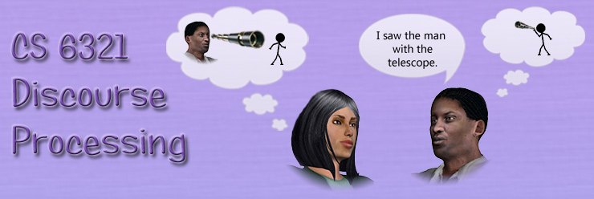

|  |
|
Interested in the structure of discourse and dialog? Wonder what makes
discourse coherent? Intrigued by cohesion of words in a discourse?The
graduate Computer Science class CS 6321 on Discourse Processing covers
computational theories of discourse (text and dialogue) structure and
processing. Discourse processing is an area of Natural Language
Processing (NLP), thus knowledge of computational models used in NLP
helps. Topics included in the course are: text cohesion and coherence,
discourse structure, anaphora resolution, centering and focusing in
discourse, speech acts, summarization and generation of discourse and
dialogue. This one-semester course provides a strong grounding in the fundamentals of discourse processing. It discusses the properties of texts that make them coherent, the properties of dialogs that take into account the context of the conversation. Students get familiar with the main discourse theories and discuss their stengths and weakenesses. Computational models of discourse are analyzed as well as discourse-relevant annotations and resources. Discourse and dialogue parsing is analyzed and applications such as summarization, generation and question/answering are considered and discussed. The theory of speech acts and the socio-cultural implications of dscourse and dialog are considered and analyzed. Immediate applications of the theories and models are tried in class discussions and through hands-on experiments. In addition, individual term-long projects allow students to implement and analyze various discourse processing approaches and features. Interactions between different aspects of discourse are considered and analyzed. Implications for the emerging social networks and blogg-based data are discussed. |